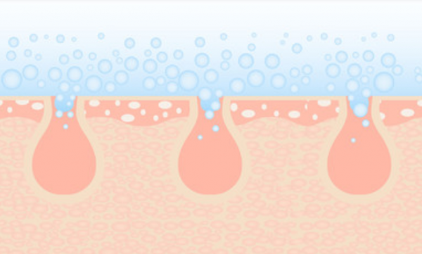
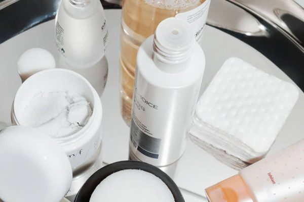

Thông tin về AHA là gì? Công dụng của AHA trong làm đẹp
AHA là gì? Chúng đóng vai trò như thế nào trong quy trình chăm sóc da? Bài viết dưới đây sẽ giúp bạn tổng hợp những kiến thức quan trọng nhất về thành phần được coi là “siêu phẩm” dành cho các tín đồ skincare
Nổi lên như một “hiện tượng lạ” – AHA là cụm từ quen thuộc thường xuyên xuất hiện trong các sản phẩm chăm sóc da. Tới 90% tín đồ đam mê skincare đều không còn xa lạ với khái niệm này. Vậy đối với những người chưa biết AHA là gì thì sao? Đừng vội bỏ qua bài viết dưới đây bởi rất có thể bạn sẽ tìm thấy mọi điều mà bạn đang cần!
AHA là gì trong mỹ phẩm?
AHA (viết tắt của Alpha Hydroxy Acid) là một dạng acid gốc nước, xuất hiện trong trái cây, thực vật, đường sữa. Chúng có khả năng tan trong nước đồng thời hấp thụ nước rất nhanh. Nhờ đặc tính an toàn trên da và kích thích sản sinh Collagen và Eslatin, nên các loại mỹ phẩm chứa AHA rất phù hợp loại bỏ các vấn đề về da như: Loại bỏ tế bào chết, chống lão hóa, làm sáng da và ngăn ngừa mụn…
AHA có nguồn gốc từ 7 loại acid:
- Glycolic Acid (có nguồn gốc từ đường mía).
- Acid Citric (có nguồn gốc tự nhiên từ các loại quả họ cam quýt).
- Acid Lactic (có nguồn gốc từ đường và sữa).
- Acid Hydroxycaproic (có nguồn gốc từ sữa ong chúa, được tiết ra bởi mật ong).
- Acid Malic (có nguồn gốc từ trái cây như lê và táo).
- Acid Hydroxy Caprylic (có nguồn gốc từ động vật).
- Acid Tartaric (có nguồn gốc từ nho).
Nhưng trong số các AHA phổ biến nhất là acid glycolic và lactic. Theo nghiên cứu, hai acid này được cho là tốt nhất bởi độ lành tính và ít gây kích ứng với da nhất
AHA có tác dụng gì?
AHA có tác dụng gì là thắc mắc của rất nhiều người. Trên thực tế, chúng có vô số lợi ích đối với thực tiễn cuộc sống như: Tạo liên kết các “khối” xây dựng tổng hợp hữu cơ. Chúng trở thành tiền chất của nhóm aldehyd điều chế thông qua sự phân tách oxy hóa. Ở dạng này, các hợp chất AHA sẽ được sử dụng ở quy mô công nghiệp (bao gồm axit glycolic, axit lactic, axit citric và acid mandelic).
Ngoài ra, không thể bỏ qua sự góp mặt vô cùng quan trọng trong sản xuất mỹ phẩm.

Quay trở lại đặc tính tan trong nước đã được đề cập trước đó, AHA dễ dàng tác dụng trên bề mặt da và tái tạo lớp biểu bì trên cùng. Thành phần này được khuyên dùng đối với da khô, da bị xỉn màu hay lão hóa, góp phần làm giảm nếp nhăn nông, trị mụn ẩn, cải thiện tình trạng da thô ráp, duy trì sự láng mịn và ẩm mượt dài lâu.
AHA trị mụn ẩn, tẩy da chết như thế nào?
Để biết được AHA trị mụn ẩn hoặc AHA tẩy da chết như thế nào, bạn cần phải hiểu được về cơ chế hoạt động của thành phần này đối với da.
Theo nghiên cứu, AHA chỉ có thể hoạt động ở tầng thượng bì, thúc đẩy sự phát triển và tăng cường độ dày của cấu trúc da, củng cố chất lượng của các sợi elastin và collagen. Khi tiếp xúc với da, chúng nhanh chóng loại bỏ các lớp sừng và tế bào chết thông qua sự can thiệp ion tế bào, kích thích tế bào già cỗi bong ra nhanh chóng và tự giải phóng ra bên ngoài.

AHA hoạt động như một chất hóa học loại bỏ tế bào chết trên da, kích thích quá trình “thay da” tự nhiên, giúp cho làn da trở nên mềm mịn, sáng hồng hơn. Đồng thời AHA còn là phương pháp cấp ẩm cho làn da nhờ vào khả năng ngậm nước vô cùng linh hoạt.
Nói cách khác, AHA hoạt động theo hình thức phá vỡ lớp cấu trúc bề mặt lớp sừng trên cùng đồng thời tái sản sinh tế bào mới, tăng độ khỏe mạnh cho làn da.
Những lý do nên sử dụng loại bỏ tế bào chết AHA
AHA sở hữu rất nhiều công dụng mà chắc chắn bạn không thể bỏ qua. Dưới đây là những lý do khiến ai trong số chúng ta cũng nên ít nhất một lần trải nghiệm thành phần này:
Duy trì làn da mềm mịn
Hầu hết, các sản phẩm chứa AHA đều có chức năng làm mềm mịn da nhanh chóng. Điều này là do lớp sừng trên bề mặt biểu bì được thanh tẩy và thúc đẩy quá trình tái tạo tế bào mới, giúp làn da sáng và khỏe mạnh. Chính bởi lý do này mà các chuyên gia thường khuyến khích khách hàng có làn da thâm sạm, khô ráp và xỉn màu thường xuyên dùng AHA.
Hỗ trợ cải thiện mụn
Trong giai đoạn bị mụn tấn công các bạn nên tham khảo ý kiến của chuyên da để biết cách sử dụng AHA đạt hiệu quả cao nhất.
Ngăn ngừa quá trình lão hóa
Lão hóa là quá trình tự nhiên của cơ thể và ai cũng phải trải qua. Vì một số nguyên nhân như tác động ngoại cảnh (ánh nắng mặt trời, khói bụi, mỹ phẩm…), do sức khỏe, bệnh lý hoặc thói quen chăm sóc da thiếu khoa học, quá trình lão hóa có thể diễn ra nhanh hơn.
AHA góp phần không nhỏ vào trong việc ngăn ngừa các dấu hiệu tuổi tác, giảm thiểu nếp nhăn, tăng cường săn chắc thông qua sự “kích ngòi” sản sinh collagen và elastin – hai “chất keo” quyết định tới độ đàn hồi của làn da.
Loại bỏ tế bào chết hóa học
Bên cạnh khả năng hỗ trợ loại bỏ mụn, AHA tẩy da chết rất hoàn hảo mà không hề gây ra các tác động vật lý trên da. Điều này đồng nghĩa với việc, làn da sẽ hạn chế tối đa bị kích ứng, mẩn đỏ hay ngứa ráp như những hiện tượng thường gặp khi tẩy da chết vật lý dạng hạt (đường kính, cát, muối…).
Để giải phóng hoàn hảo các tế bào chết tích tụ trên bề mặt biểu bì, bạn nên sử dụng AHA sau bước rửa mặt và trước bước tinh chất – kem dưỡng sẽ nhận được kết quả tối ưu nhất.
Hỗ trợ điều trị nám da
Được mệnh danh là thành phần “ngôi sao” có khả năng nổi trội trong việc kiểm soát tăng sinh melanin trên da, AHA hiệu quả trong việc giúp giảm nám, tàn nhang và các đốm sậm màu trên da.
Phục hồi tổn thương do ánh nắng mặt trời
Thường xuyên tiếp xúc với ánh nắng mặt trời có thể khiến làn da tổn thương nghiêm trọng như: tăng sắc tố (xuất hiện các đốm đen), da sạm và xỉn màu, xuất hiện các nếp nhăn… Việc sử dụng AHA có thể giảm thiểu tác động của ánh nắng mặt trời lên da, giúp bảo vệ da hoàn hảo.
Nên lựa chọn AHA nồng độ nào phù hợp nhất?

Nếu bạn đã biết đến BHA, thì AHA đòi hỏi một nồng độ cao hơn BHA để hoạt động. Hầu hết, nồng độ AHA trung bình khoảng từ 5 – 10% sẽ phát huy tác dụng tốt nhất. Một số trường hợp sẽ dùng tới AHA trên 20% song cần phải có kê đơn da liễu của bác sĩ. Khi nhìn vào bảng thành phần, cái tên AHA sẽ phải được liệt kê thứ tự 1 trong 3 cái tên đầu tiên (Thành phần lượng chất càng cao sẽ được đưa lên đầu tiên).
Không phải cứ sản phẩm chứa AHA sẽ mang lại tác dụng tích cực đối với làn da. Tùy từng trường hợp loại bỏ cũng như đặc tính da của mỗi người sẽ có phân loại nồng độ khác nhau. Cụ thể:
- AHA nồng độ từ 2% – 5%: Phù hợp để loại bỏ tế bào chết, giải phóng lỗ chân lông, cải thiện tình trạng da sần sùi bề mặt và hỗ trợ loại bỏ da khô bong tróc.
- AHA nồng độ từ 5% – 10%: Duy trì làn da mịn màng và khỏe mạnh, giảm thiểu rõ rệt các dấu hiệu lão hóa (nếp nhăn li ti, da xỉn màu).
- AHA nồng độ từ 12% – 15%: Thích hợp loại bỏ thâm sạm và sẹo mụn.
- AHA nồng độ cao 20% – 70%: Ứng dụng trong spa, thẩm mỹ viện như một dạng chất lột tẩy (peel) khá an toàn tái tạo bề mặt da và cải thiện triệt để các tình trạng sẹo, thâm mụn hoặc bề mặt da sần vỏ cam, dày sừng… Trong trường hợp này, bạn cần phải có kê đơn của bác sĩ da liễu và không tự ý sử dụng tại nhà. Nên lựa chọn các địa chỉ làm đẹp uy tín để hạn chế tới mức tối đa các trường hợp gây thương tổn cho da.
Những vấn đề có thể gặp phải khi sử dụng AHA
Việc sử dụng AHA đối với làn da từng người không phải lúc nào cũng phát huy được hết những công dụng trên. Đôi khi bạn sẽ gặp phải những trường hợp phản ứng phụ như da nhạy cảm hơn trước tác động của ánh nắng mặt trời hoặc kích ứng da.
Giai đoạn sử dụng AHA/BHA khiến độ nhạy cảm có thể tăng lên tới 50%, do đó bắt buộc bạn cần phải kết hợp với các sản phẩm chống nắng có chỉ số SPF từ 30 trở lên đồng thời sử dụng thêm kem dưỡng ẩm cho da thường xuyên để đạt được hiệu quả cao nhất.
Theo khuyến cáo của FDA (Cục Quản lý Thực Phẩm & Dược Phẩm Hoa Kỳ), khi chúng ta sử dụng sản phẩm chứa AHA, dù trong sản phẩm đó đã chứa thành phần chống nắng, thế nhưng bắt buộc dùng thêm một kem chống nắng chuyên dụng đồng thời che chắn thật kỹ nhằm giảm các nguy cơ hư tổn da do tia UVA/UVB gây ra. Bên cạnh đó, nồng độ mà FDA cho phép đưa AHA vào trong mỹ phẩm được quy định rõ: Chỉ giới hạn ở mức dưới 10%.
Nên sử dụng AHA ở dạng nào tốt hơn?
Dựa trên những nghiên cứu về đặc tính thành phần cũng như trải nghiệm người dùng, các chuyên gia khuyến cáo các sản phẩm AHA sẽ được sử dụng tốt nhất khi tồn tại ở dạng gel, cream và lotion bởi những dạng này cho khả năng thẩm thấu tốt nhất.
Đối với AHA dưới dạng sữa rửa mặt hoặc sản phẩm rửa với nước sẽ không cho hiệu quả cao bởi AHA bị trôi trước khi chúng kịp phát huy công dụng trên da.
Hướng dẫn cách sử dụng AHA

Để sử dụng AHA đúng cách, bạn có thể tham khảo hướng dẫn sau:
Đối với những người lần đầu tiên sử dụng AHA, hãy bắt đầu với nồng độ 4% và sử dụng cách ngày (3 lần/tuần) và dùng liều lượng ít để thử độ kích ứng trên da.
Hiện tượng thường thấy là da bong tróc nhẹ hoặc ửng hồng, điều này không có gì đáng lo ngại bởi đây là phản ứng của thành phần khi đang phát hủy liên kết cũ trên bề mặt da và giải phóng tế bào già cỗi. Làn da của bạn sẽ nhanh chóng tái tạo và căng mịn vài ngày sau đó.
Hãy sử dụng AHA sau bước tẩy trang, rửa mặt và trước bước tinh chất. Đây là lúc mà làn da đạt trạng thái lý tưởng: Bề mặt da được làm sạch, lỗ chân lông mở và khi sử dụng AHA, làn da sẽ được làm sạch tối ưu, loại bỏ nhanh chóng tế bào hư tổn và “dọn đường” cho các bước dưỡng chất tiếp theo thẩm thất tốt nhất.
Sau khi dùng AHA, bạn nên chờ trong 15 – 20 phút mới bắt đầu quy trình dưỡng da tiếp theo. Đối với các sản phẩm AHA của Paula’s Choice, bạn hoàn toàn có thể apply ngay các sản phẩm khác nếu không có đủ thời gian.
Bạn đều có thể dùng AHA vào cả sáng và tối, tuy nhiên vì thành phần AHA hấp thu ánh sáng rất mạnh nên vào ban ngày bạn cần phải sử dụng kem chống nắng có chỉ số SPF từ 30 trở lên.
Việc dưỡng ẩm đầy đủ cũng rất quan trọng để hạn chế tối đa tình trạng bong tróc hay mẩn đỏ. Ngoài ra, bạn cũng có thể dùng kết hợp AHA với BHA, AHA với retinol hoặc AHA với vitamin C/Niacinamide/Hyaluronic Acid… để tăng cường hiệu quả loại bỏ da tốt nhất. AHA dùng được cho vùng khóe miệng, xung quanh nếp nhăn mắt nhưng nên tránh khu vực sát mí mắt trên/dưới.
Một số lưu ý khi sử dụng AHA
- Bạn tuyệt đối không nên sử dụng AHA quá liều lượng. Việc lạm dụng quá nhiều thành phần này vào trong chăm sóc da có thể làm tăng độ nhạy cảm cho da.
- Khi sử dụng sản phẩm nên vỗ nhẹ nhàng, tránh chà xát để sản phẩm thẩm thấu nhanh chóng nhất.
- Chỉ nên dùng 1-2 sản phẩm chứa AHA/BHA. Thói quen thay đổi các thương hiệu sản phẩm liên tục sẽ khiến da có nguy cơ bị tổn thương nghiêm trọng do thời gian da phải làm quen với các quy trình dưỡng da mới không đủ.
- Cần lựa chọn sản phẩm phù hợp với da. Tránh sử dụng mỹ phẩm chứa AHA theo phong trào mà bạn hãy tham khảo ý kiến của chuyên gia cũng như tìm cho mình thương hiệu uy tín trước khi sử dụng.
- Với những sản phẩm AHA nồng độ trên 15%, bạn cần có sự cho phép của bác sĩ da liễu bởi chúng dễ khiến da rát, bỏng nhẹ nếu sử dụng sai liệu trình.
Xem thêm bài viết khác:
Tất tần tật thông tin về BHA là gì? Công dụng của BHA
Tác dụng của vitamin C với da không phải ai cũng biết